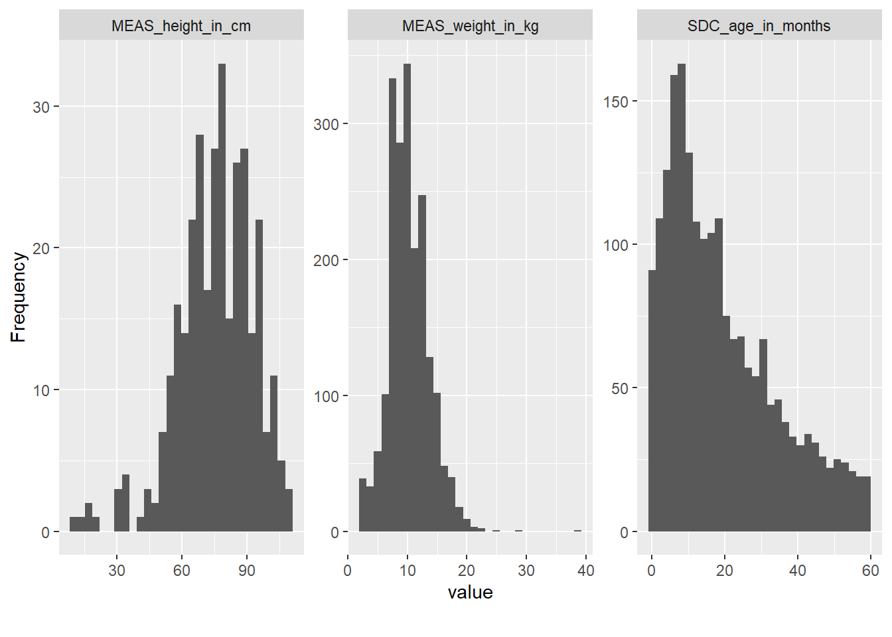
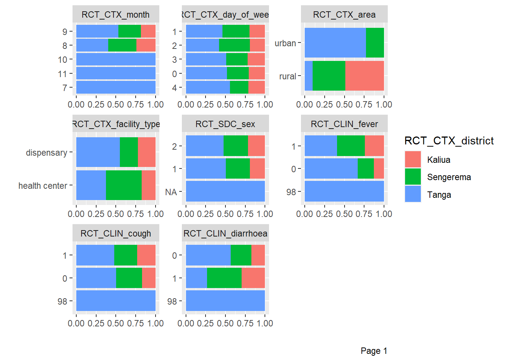
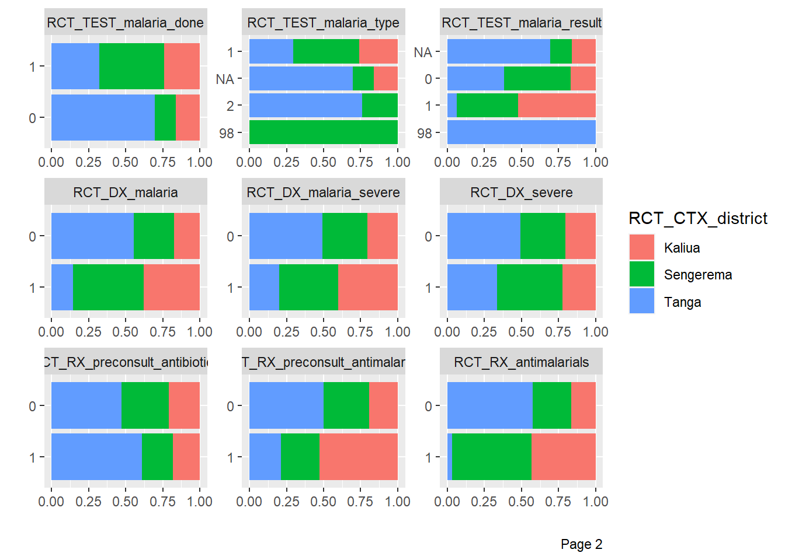
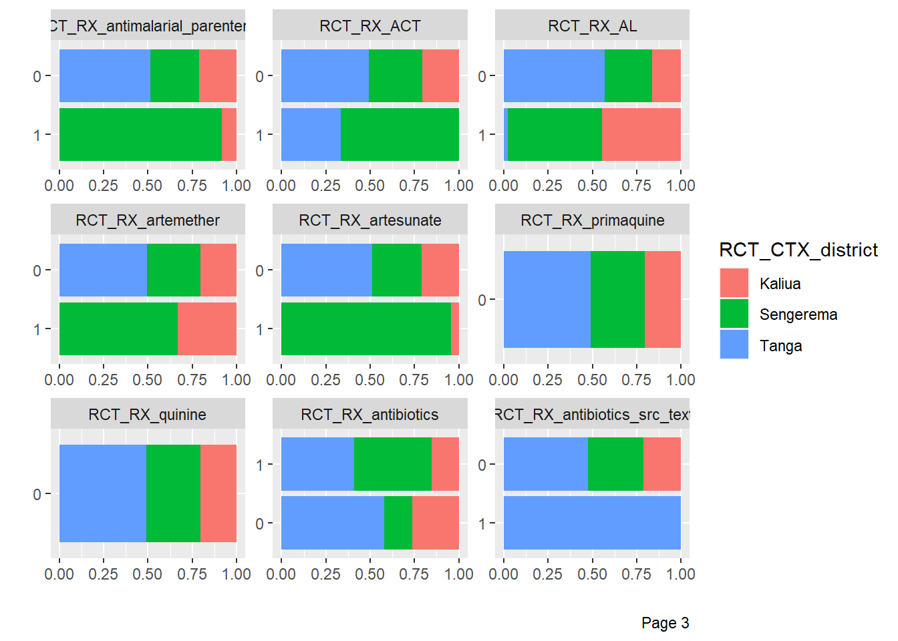
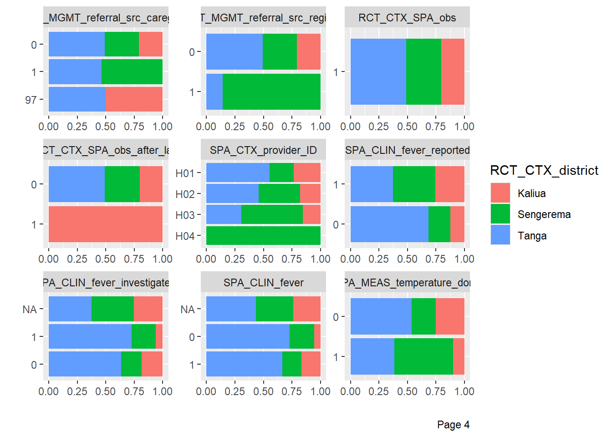
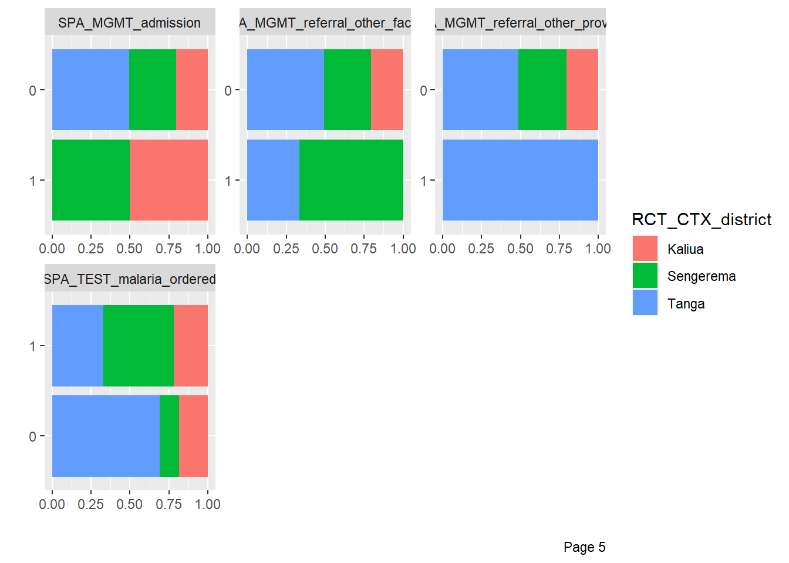
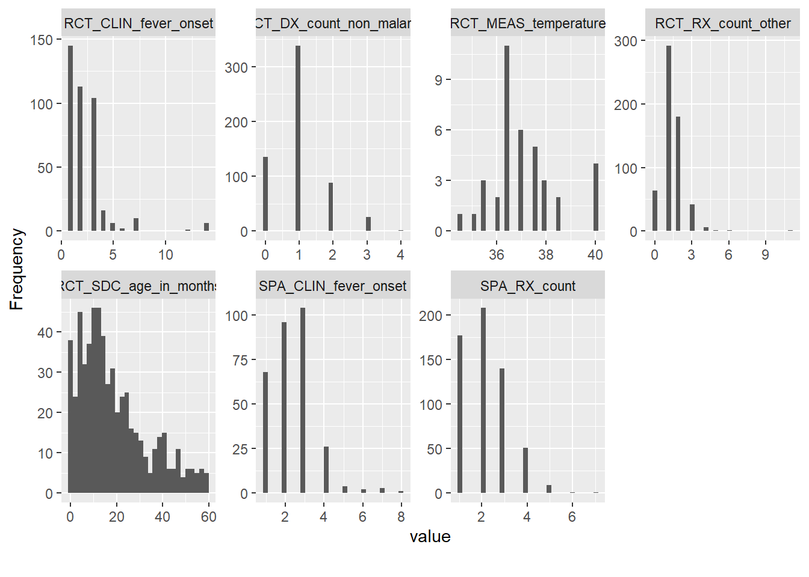
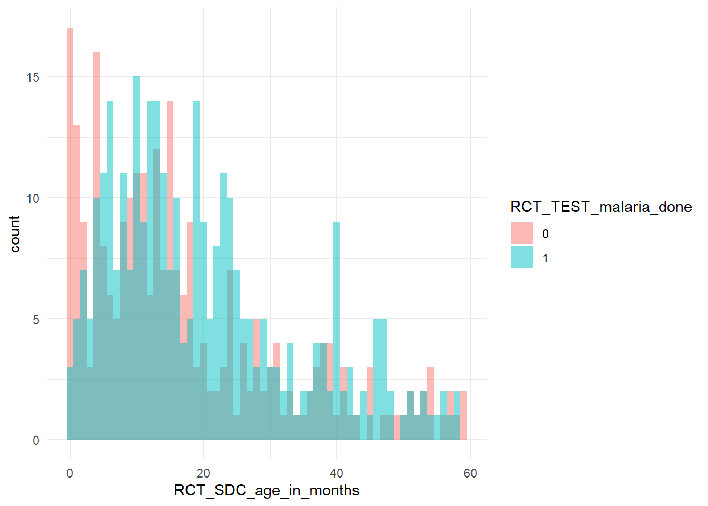
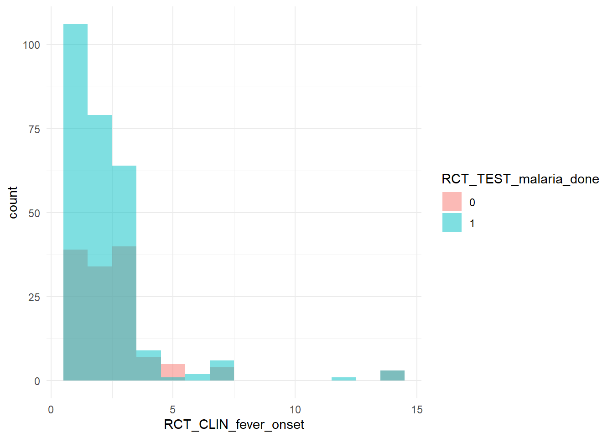
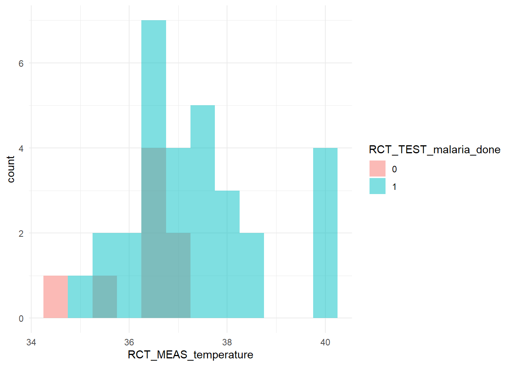

```{r}
library(tidyverse) # includes dplyr and tibble
library(skimr)
library(ggplot2)
library(DataExplorer)
```20 📙 Practical
20.1 Introduction
20.1.1 Overview
This tutorial is adapted from the excellent Machine learning in Python with scikit-learn
20.1.2 Learning objectives
20.2 Question
We are interested in predicting referral in children under 5 based on two of the clinical measurements at the consultation:
- age in months and
- param2.
20.3 Load the data
The dataset is stored in dataset1.dta.
Read the dataset and store it into a dataframe called df.
Let’s first load the entire adult dataset containing both numerical and categorical data.
```{r}
df <- openxlsx::read.xlsx("./data/dataset3.xlsx")
```20.4 Data exploration
We want to do some data exploration to get an initial understanding of the data. Before building a predictive model, it is always a good idea to look at the data:
- maybe the task you are trying to achieve can be solved without machine learning;
- you need to check that the information you need for your task is actually present in the dataset;
- inspecting the data is a good way to find peculiarities. These can arise during data collection (for example, malfunctioning sensor or missing values), or from the way the data is processed afterwards (for example capped values).
20.4.1 Variables / features
Examine the structure of the data, including variable names, labels.
- How many variables are numerical?
- How many features are categorical?
Display the variables/features child_id, test and test for the 10 first observations/samples in the data.
Tip
- Stata hint: use the the combination of
describeandlistcommand to inspect the data - R hint: you need to load the
dplyrlibrary to use piping
```{r}
# Write your code here
``````{r}
df %>%
skimr::skim()
```| Name | Piped data |
| Number of rows | 587 |
| Number of columns | 51 |
| _______________________ | |
| Column type frequency: | |
| character | 6 |
| numeric | 45 |
| ________________________ | |
| Group variables | None |
Variable type: character
| skim_variable | n_missing | complete_rate | min | max | empty | n_unique | whitespace |
|---|---|---|---|---|---|---|---|
| RCT_CTX_district | 0 | 1.00 | 5 | 9 | 0 | 3 | 0 |
| RCT_CTX_facility_ID | 0 | 1.00 | 5 | 5 | 0 | 18 | 0 |
| RCT_CTX_area | 0 | 1.00 | 5 | 5 | 0 | 2 | 0 |
| RCT_CTX_facility_type | 0 | 1.00 | 10 | 13 | 0 | 2 | 0 |
| RCT_RX_free_text | 454 | 0.23 | 6 | 177 | 0 | 109 | 0 |
| SPA_CTX_provider_ID | 0 | 1.00 | 3 | 3 | 0 | 4 | 0 |
Variable type: numeric
| skim_variable | n_missing | complete_rate | mean | sd | p0 | p25 | p50 | p75 | p100 | hist |
|---|---|---|---|---|---|---|---|---|---|---|
| RCT_child_ID | 0 | 1.00 | 294.00 | 169.60 | 1.0 | 147.5 | 294 | 440.5 | 587 | ▇▇▇▇▇ |
| RCT_CTX_month | 0 | 1.00 | 8.64 | 0.53 | 7.0 | 8.0 | 9 | 9.0 | 11 | ▁▅▇▁▁ |
| RCT_CTX_day_of_week | 0 | 1.00 | 1.95 | 1.37 | 0.0 | 1.0 | 2 | 3.0 | 4 | ▆▇▇▇▆ |
| RCT_SDC_sex | 1 | 1.00 | 1.51 | 0.50 | 1.0 | 1.0 | 2 | 2.0 | 2 | ▇▁▁▁▇ |
| RCT_SDC_age_in_months | 0 | 1.00 | 18.74 | 14.46 | 0.0 | 8.0 | 15 | 26.0 | 59 | ▇▇▃▂▁ |
| RCT_CLIN_fever | 0 | 1.00 | 0.85 | 4.04 | 0.0 | 0.0 | 1 | 1.0 | 98 | ▇▁▁▁▁ |
| RCT_CLIN_fever_onset | 184 | 0.69 | 2.37 | 1.97 | 1.0 | 1.0 | 2 | 3.0 | 14 | ▇▁▁▁▁ |
| RCT_CLIN_cough | 0 | 1.00 | 0.91 | 5.70 | 0.0 | 0.0 | 1 | 1.0 | 98 | ▇▁▁▁▁ |
| RCT_CLIN_diarrhoea | 0 | 1.00 | 0.42 | 4.06 | 0.0 | 0.0 | 0 | 1.0 | 98 | ▇▁▁▁▁ |
| RCT_MEAS_temperature | 549 | 0.06 | 37.11 | 1.34 | 34.5 | 36.5 | 37 | 37.5 | 40 | ▃▇▇▃▂ |
| RCT_TEST_malaria_done | 0 | 1.00 | 0.55 | 0.50 | 0.0 | 0.0 | 1 | 1.0 | 1 | ▆▁▁▁▇ |
| RCT_TEST_malaria_type | 266 | 0.55 | 2.58 | 12.02 | 1.0 | 1.0 | 1 | 1.0 | 98 | ▇▁▁▁▁ |
| RCT_TEST_malaria_result | 266 | 0.55 | 0.81 | 7.72 | 0.0 | 0.0 | 0 | 0.0 | 98 | ▇▁▁▁▁ |
| RCT_DX_malaria | 0 | 1.00 | 0.15 | 0.36 | 0.0 | 0.0 | 0 | 0.0 | 1 | ▇▁▁▁▂ |
| RCT_DX_malaria_severe | 0 | 1.00 | 0.01 | 0.09 | 0.0 | 0.0 | 0 | 0.0 | 1 | ▇▁▁▁▁ |
| RCT_DX_count_non_malaria | 0 | 1.00 | 1.01 | 0.75 | 0.0 | 1.0 | 1 | 1.0 | 4 | ▃▇▂▁▁ |
| RCT_DX_severe | 0 | 1.00 | 0.02 | 0.12 | 0.0 | 0.0 | 0 | 0.0 | 1 | ▇▁▁▁▁ |
| RCT_RX_preconsult_antibiotics | 0 | 1.00 | 0.13 | 0.34 | 0.0 | 0.0 | 0 | 0.0 | 1 | ▇▁▁▁▁ |
| RCT_RX_preconsult_antimalarials | 0 | 1.00 | 0.03 | 0.18 | 0.0 | 0.0 | 0 | 0.0 | 1 | ▇▁▁▁▁ |
| RCT_RX_antimalarials | 0 | 1.00 | 0.15 | 0.36 | 0.0 | 0.0 | 0 | 0.0 | 1 | ▇▁▁▁▂ |
| RCT_RX_antimalarial_parenteral | 0 | 1.00 | 0.04 | 0.20 | 0.0 | 0.0 | 0 | 0.0 | 1 | ▇▁▁▁▁ |
| RCT_RX_ACT | 0 | 1.00 | 0.01 | 0.07 | 0.0 | 0.0 | 0 | 0.0 | 1 | ▇▁▁▁▁ |
| RCT_RX_AL | 0 | 1.00 | 0.14 | 0.35 | 0.0 | 0.0 | 0 | 0.0 | 1 | ▇▁▁▁▂ |
| RCT_RX_artemether | 0 | 1.00 | 0.01 | 0.07 | 0.0 | 0.0 | 0 | 0.0 | 1 | ▇▁▁▁▁ |
| RCT_RX_artesunate | 0 | 1.00 | 0.04 | 0.19 | 0.0 | 0.0 | 0 | 0.0 | 1 | ▇▁▁▁▁ |
| RCT_RX_primaquine | 0 | 1.00 | 0.00 | 0.00 | 0.0 | 0.0 | 0 | 0.0 | 0 | ▁▁▇▁▁ |
| RCT_RX_quinine | 0 | 1.00 | 0.00 | 0.00 | 0.0 | 0.0 | 0 | 0.0 | 0 | ▁▁▇▁▁ |
| RCT_RX_antibiotics | 0 | 1.00 | 0.52 | 0.50 | 0.0 | 0.0 | 1 | 1.0 | 1 | ▇▁▁▁▇ |
| RCT_RX_antibiotics_src_text | 0 | 1.00 | 0.03 | 0.17 | 0.0 | 0.0 | 0 | 0.0 | 1 | ▇▁▁▁▁ |
| RCT_RX_count_other | 0 | 1.00 | 1.40 | 0.93 | 0.0 | 1.0 | 1 | 2.0 | 11 | ▇▁▁▁▁ |
| RCT_MGMT_referral_src_caregiver | 0 | 1.00 | 0.35 | 5.66 | 0.0 | 0.0 | 0 | 0.0 | 97 | ▇▁▁▁▁ |
| RCT_MGMT_referral_src_registry | 0 | 1.00 | 0.01 | 0.11 | 0.0 | 0.0 | 0 | 0.0 | 1 | ▇▁▁▁▁ |
| RCT_CTX_SPA_obs | 0 | 1.00 | 1.00 | 0.00 | 1.0 | 1.0 | 1 | 1.0 | 1 | ▁▁▇▁▁ |
| RCT_CTX_SPA_obs_after_lab | 0 | 1.00 | 0.00 | 0.04 | 0.0 | 0.0 | 0 | 0.0 | 1 | ▇▁▁▁▁ |
| SPA_CLIN_fever_reported | 0 | 1.00 | 0.62 | 0.48 | 0.0 | 0.0 | 1 | 1.0 | 1 | ▅▁▁▁▇ |
| SPA_CLIN_fever_investigated | 366 | 0.38 | 0.52 | 0.50 | 0.0 | 0.0 | 1 | 1.0 | 1 | ▇▁▁▁▇ |
| SPA_CLIN_fever | 473 | 0.19 | 0.05 | 0.22 | 0.0 | 0.0 | 0 | 0.0 | 1 | ▇▁▁▁▁ |
| SPA_CLIN_fever_onset | 283 | 0.52 | 2.42 | 1.15 | 1.0 | 2.0 | 2 | 3.0 | 8 | ▇▅▂▁▁ |
| SPA_MEAS_temperature_done | 0 | 1.00 | 0.30 | 0.46 | 0.0 | 0.0 | 0 | 1.0 | 1 | ▇▁▁▁▃ |
| SPA_MGMT_admission | 0 | 1.00 | 0.01 | 0.08 | 0.0 | 0.0 | 0 | 0.0 | 1 | ▇▁▁▁▁ |
| SPA_MGMT_referral_other_facility | 0 | 1.00 | 0.02 | 0.12 | 0.0 | 0.0 | 0 | 0.0 | 1 | ▇▁▁▁▁ |
| SPA_MGMT_referral_other_provider | 0 | 1.00 | 0.01 | 0.07 | 0.0 | 0.0 | 0 | 0.0 | 1 | ▇▁▁▁▁ |
| SPA_RX_count | 0 | 1.00 | 2.17 | 1.03 | 1.0 | 1.0 | 2 | 3.0 | 7 | ▇▃▁▁▁ |
| SPA_TEST_malaria_ordered | 0 | 1.00 | 0.55 | 0.50 | 0.0 | 0.0 | 1 | 1.0 | 1 | ▆▁▁▁▇ |
| SPA_RX_prereferral | 587 | 0.00 | NaN | NA | NA | NA | NA | NA | NA |
```{r}
df <- df %>%
tibble::remove_rownames() %>%
tibble::column_to_rownames(var="RCT_child_ID") %>%
dplyr::mutate(across(c(RCT_CTX_month,
RCT_CTX_day_of_week,
RCT_SDC_sex,
RCT_CLIN_fever,
RCT_CLIN_cough,
RCT_CLIN_diarrhoea,
RCT_RX_preconsult_antibiotics,
RCT_RX_preconsult_antimalarials,
RCT_CTX_district,
RCT_CTX_area,
RCT_CTX_facility_type,
RCT_TEST_malaria_done,
RCT_TEST_malaria_type,
RCT_TEST_malaria_result,
RCT_DX_malaria,
RCT_DX_malaria_severe,
SPA_CLIN_fever_reported,
SPA_CLIN_fever_investigated,
SPA_CLIN_fever,
RCT_DX_severe,
RCT_RX_antimalarials,
RCT_RX_antimalarial_parenteral,
RCT_RX_ACT,
RCT_RX_AL,
RCT_RX_artemether,
RCT_RX_artesunate,
RCT_RX_primaquine,
RCT_RX_quinine,
RCT_RX_antibiotics,
RCT_RX_antibiotics_src_text,
RCT_MGMT_referral_src_caregiver,
RCT_MGMT_referral_src_registry,
RCT_CTX_SPA_obs,
RCT_CTX_SPA_obs_after_lab,
SPA_MEAS_temperature_done,
SPA_MGMT_admission,
SPA_MGMT_referral_other_facility,
SPA_MGMT_referral_other_provider,
SPA_TEST_malaria_ordered,
SPA_RX_prereferral),
factor))
``````{r}
df %>%
skimr::skim()
```| Name | Piped data |
| Number of rows | 587 |
| Number of columns | 50 |
| _______________________ | |
| Column type frequency: | |
| character | 3 |
| factor | 40 |
| numeric | 7 |
| ________________________ | |
| Group variables | None |
Variable type: character
| skim_variable | n_missing | complete_rate | min | max | empty | n_unique | whitespace |
|---|---|---|---|---|---|---|---|
| RCT_CTX_facility_ID | 0 | 1.00 | 5 | 5 | 0 | 18 | 0 |
| RCT_RX_free_text | 454 | 0.23 | 6 | 177 | 0 | 109 | 0 |
| SPA_CTX_provider_ID | 0 | 1.00 | 3 | 3 | 0 | 4 | 0 |
Variable type: factor
| skim_variable | n_missing | complete_rate | ordered | n_unique | top_counts |
|---|---|---|---|---|---|
| RCT_CTX_month | 0 | 1.00 | FALSE | 5 | 9: 360, 8: 219, 10: 4, 11: 3 |
| RCT_CTX_day_of_week | 0 | 1.00 | FALSE | 5 | 1: 138, 2: 119, 3: 118, 0: 108 |
| RCT_CTX_district | 0 | 1.00 | FALSE | 3 | Tan: 288, Sen: 179, Kal: 120 |
| RCT_CTX_area | 0 | 1.00 | FALSE | 2 | urb: 342, rur: 245 |
| RCT_CTX_facility_type | 0 | 1.00 | FALSE | 2 | dis: 386, hea: 201 |
| RCT_SDC_sex | 1 | 1.00 | FALSE | 2 | 2: 300, 1: 286 |
| RCT_CLIN_fever | 0 | 1.00 | FALSE | 3 | 1: 403, 0: 183, 98: 1 |
| RCT_CLIN_cough | 0 | 1.00 | FALSE | 3 | 1: 340, 0: 245, 98: 2 |
| RCT_CLIN_diarrhoea | 0 | 1.00 | FALSE | 3 | 0: 437, 1: 149, 98: 1 |
| RCT_TEST_malaria_done | 0 | 1.00 | FALSE | 2 | 1: 321, 0: 266 |
| RCT_TEST_malaria_type | 266 | 0.55 | FALSE | 3 | 1: 295, 2: 21, 98: 5 |
| RCT_TEST_malaria_result | 266 | 0.55 | FALSE | 3 | 0: 254, 1: 65, 98: 2 |
| RCT_DX_malaria | 0 | 1.00 | FALSE | 2 | 0: 497, 1: 90 |
| RCT_DX_malaria_severe | 0 | 1.00 | FALSE | 2 | 0: 582, 1: 5 |
| RCT_DX_severe | 0 | 1.00 | FALSE | 2 | 0: 578, 1: 9 |
| RCT_RX_preconsult_antibiotics | 0 | 1.00 | FALSE | 2 | 0: 510, 1: 77 |
| RCT_RX_preconsult_antimalarials | 0 | 1.00 | FALSE | 2 | 0: 568, 1: 19 |
| RCT_RX_antimalarials | 0 | 1.00 | FALSE | 2 | 0: 497, 1: 90 |
| RCT_RX_antimalarial_parenteral | 0 | 1.00 | FALSE | 2 | 0: 563, 1: 24 |
| RCT_RX_ACT | 0 | 1.00 | FALSE | 2 | 0: 584, 1: 3 |
| RCT_RX_AL | 0 | 1.00 | FALSE | 2 | 0: 502, 1: 85 |
| RCT_RX_artemether | 0 | 1.00 | FALSE | 2 | 0: 584, 1: 3 |
| RCT_RX_artesunate | 0 | 1.00 | FALSE | 2 | 0: 564, 1: 23 |
| RCT_RX_primaquine | 0 | 1.00 | FALSE | 1 | 0: 587 |
| RCT_RX_quinine | 0 | 1.00 | FALSE | 1 | 0: 587 |
| RCT_RX_antibiotics | 0 | 1.00 | FALSE | 2 | 1: 308, 0: 279 |
| RCT_RX_antibiotics_src_text | 0 | 1.00 | FALSE | 2 | 0: 569, 1: 18 |
| RCT_MGMT_referral_src_caregiver | 0 | 1.00 | FALSE | 3 | 0: 572, 1: 13, 97: 2 |
| RCT_MGMT_referral_src_registry | 0 | 1.00 | FALSE | 2 | 0: 580, 1: 7 |
| RCT_CTX_SPA_obs | 0 | 1.00 | FALSE | 1 | 1: 587 |
| RCT_CTX_SPA_obs_after_lab | 0 | 1.00 | FALSE | 2 | 0: 586, 1: 1 |
| SPA_CLIN_fever_reported | 0 | 1.00 | FALSE | 2 | 1: 366, 0: 221 |
| SPA_CLIN_fever_investigated | 366 | 0.38 | FALSE | 2 | 1: 114, 0: 107 |
| SPA_CLIN_fever | 473 | 0.19 | FALSE | 2 | 0: 108, 1: 6 |
| SPA_MEAS_temperature_done | 0 | 1.00 | FALSE | 2 | 0: 413, 1: 174 |
| SPA_MGMT_admission | 0 | 1.00 | FALSE | 2 | 0: 583, 1: 4 |
| SPA_MGMT_referral_other_facility | 0 | 1.00 | FALSE | 2 | 0: 578, 1: 9 |
| SPA_MGMT_referral_other_provider | 0 | 1.00 | FALSE | 2 | 0: 584, 1: 3 |
| SPA_TEST_malaria_ordered | 0 | 1.00 | FALSE | 2 | 1: 323, 0: 264 |
| SPA_RX_prereferral | 587 | 0.00 | FALSE | 0 | : |
Variable type: numeric
| skim_variable | n_missing | complete_rate | mean | sd | p0 | p25 | p50 | p75 | p100 | hist |
|---|---|---|---|---|---|---|---|---|---|---|
| RCT_SDC_age_in_months | 0 | 1.00 | 18.74 | 14.46 | 0.0 | 8.0 | 15 | 26.0 | 59 | ▇▇▃▂▁ |
| RCT_CLIN_fever_onset | 184 | 0.69 | 2.37 | 1.97 | 1.0 | 1.0 | 2 | 3.0 | 14 | ▇▁▁▁▁ |
| RCT_MEAS_temperature | 549 | 0.06 | 37.11 | 1.34 | 34.5 | 36.5 | 37 | 37.5 | 40 | ▃▇▇▃▂ |
| RCT_DX_count_non_malaria | 0 | 1.00 | 1.01 | 0.75 | 0.0 | 1.0 | 1 | 1.0 | 4 | ▃▇▂▁▁ |
| RCT_RX_count_other | 0 | 1.00 | 1.40 | 0.93 | 0.0 | 1.0 | 1 | 2.0 | 11 | ▇▁▁▁▁ |
| SPA_CLIN_fever_onset | 283 | 0.52 | 2.42 | 1.15 | 1.0 | 2.0 | 2 | 3.0 | 8 | ▇▅▂▁▁ |
| SPA_RX_count | 0 | 1.00 | 2.17 | 1.03 | 1.0 | 1.0 | 2 | 3.0 | 7 | ▇▃▁▁▁ |
Numerical variables can be naturally handled by machine learning algorithms that are typically composed of a sequence of arithmetic instructions such as additions and multiplications.
DataExplorer::plot_missing(df,
geom_label_args = list(size = 2, label.padding = unit(0.2, "lines")))
DataExplorer::plot_bar(df %>%
dplyr::select(-RCT_CTX_facility_ID),
by = "RCT_CTX_district")




20.4.2 Target classes
What are the different antibiotic treatment classes available in the dataset and how many observations/samples of each types are there?
Tip
- Python: select the right column and use the
value_countsmethod.
```{r}
# Write your code here
``````{r}
df %>%
skimr::skim(RCT_CTX_facility_ID)
```| Name | Piped data |
| Number of rows | 587 |
| Number of columns | 50 |
| _______________________ | |
| Column type frequency: | |
| character | 1 |
| ________________________ | |
| Group variables | None |
Variable type: character
| skim_variable | n_missing | complete_rate | min | max | empty | n_unique | whitespace |
|---|---|---|---|---|---|---|---|
| RCT_CTX_facility_ID | 0 | 1 | 5 | 5 | 0 | 18 | 0 |
20.5 Variable/feature distribution
Let’s look at the distribution of individual features, to get some insights about the data. We can start by plotting histograms, note that this only works for features containing numerical values.
Plot histograms for the numerical variables/features
```{r}
# Write your code here
``````{r}
# Write your code here
```DataExplorer::plot_histogram(df)
Show variable/feature distribution for each class.
Looking at these distributions, how difficult do you think it will be to classify the sick children using the param1 and param2 variables/features?
```{r}
# Write your code here
``````{r}
# Write your code here
```#dummy <- caret::dummyVars(" ~ .", data=df)ggplot2::ggplot(data = df, aes(x = RCT_SDC_age_in_months, fill = RCT_TEST_malaria_done)) +
geom_histogram(binwidth = 1, alpha = 0.5, position = "identity") +
theme_minimal()
ggplot2::ggplot(data = df, aes(x = RCT_CLIN_fever_onset, fill = RCT_TEST_malaria_done)) +
geom_histogram(binwidth = 1, alpha = 0.5, position = "identity") +
theme_minimal()
ggplot2::ggplot(data = df, aes(x = RCT_CLIN_fever_onset, fill = RCT_TEST_malaria_done)) +
geom_histogram(binwidth = 1, alpha = 0.5, position = "identity") +
theme_minimal()ggplot2::ggplot(data = df, aes(x = RCT_MEAS_temperature, fill = RCT_TEST_malaria_done)) +
geom_histogram(binwidth = 0.5, alpha = 0.5, position = "identity") +
theme_minimal()
The score of a model will in general depend on the way we make the training / test split. One downside of doing a single split is that it does not give any information about this variability. Another downside, in a setting where the amount of data is small, is that the data available for training and testing will be even smaller after splitting.